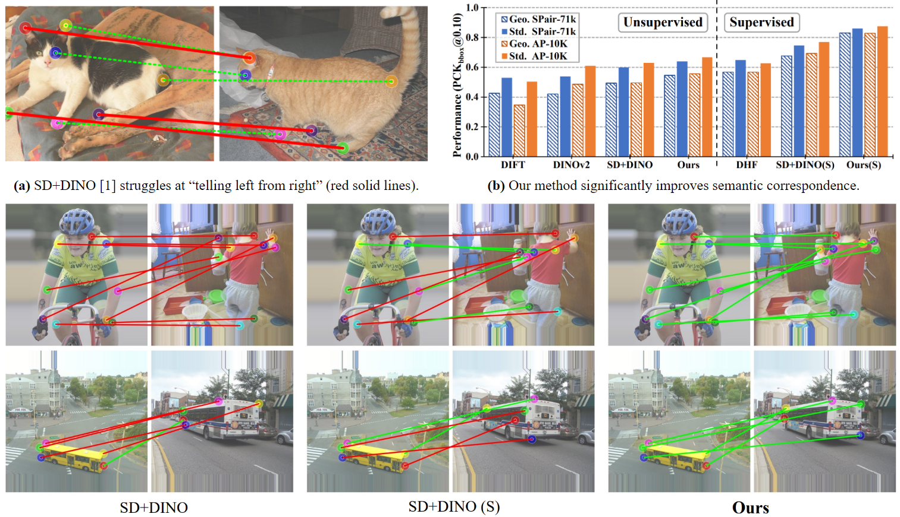
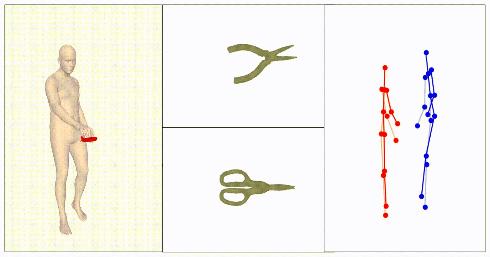

|
Qinshi(Carol) Zhang Hi! I'm Qinshi. I obtained my Bachelor's degree in Computer Science and Technology from the School of Information Engineering at China Jiliang University (CJLU) and another degree in Computer and Information Science at Auckland University of Technology (AUT), advised by Dr. Lin Xiang and Dr. Haijun Tao. Recently,I am actively working with Dr. KaiXing Zhao, Northwestern Polytechnical University, on quality-oriented crowdsourcing sensing in machine learning. Prior to that, I worked as a research intern under the supervision of Dr. Ray LC, City University of Hong Kong, on a project involving world-building games using Large Language Models (LLMs), which introduced a new technique for probing climate change attitudes by actualizing a GPT4-driven chatbot system. My research interests lie in Human-Computer Interaction (HCI) and large language model (LLM), especially the societal impact of information technologies, surrounding privacy leakage, and social justice concerns in general.I'm actively applying for a Ph.D. position in 2024 Fall! |

|
-->
| News |
|
[2024.01] I will be serving as a Student Volunteer at CHI 2024! See you in HHawaiʻi!!
|
| Research Interests |
|
I would be always welcome to work together! I have done serveral projects in HCI: |
| Publications |
|  |
Junyi Zhang, Charles Herrmann, Junhwa Hur, Eric Chen, Varun Jampani, Deqing Sun, Ming-Hsuan Yang Under review, 2023 project page / arXiv |

|
Junyi Zhang, Charles Herrmann, Junhwa Hur, Luisa F. PolanÃa, Varun Jampani, Deqing Sun, Ming-Hsuan Yang NeurIPS, 2023 code / project page / arXiv / Poster |
|
Junyi Zhang, Jiaqi Guo, Shizhao Sun, Jian-Guang Lou, Dongmei Zhang ICCV, 2023 code & project page / arXiv / Poster |
|
|
Yong-Lu Li*, Xiaoqian Wu*, Xinpeng Liu, Yiming Dou, Yikun Ji, Junyi Zhang, Yixing Li, Xudong Lu, Jingru Tan, Cewu Lu Under review, 2023 project page / arXiv |
|
|
Xiaoqian Wu*, Yong-Lu Li*, Xinpeng Liu, Junyi Zhang, Yuzhe Wu, Cewu Lu ECCV, 2022 project page / arXiv |
| Course Projects |
|  |
Junyi Zhang and Hongchi Xia (course report only) Advisor: Dr. Xinpeng Liu and Prof. Yong-Lu Li CS3327: Virtual Reality and Augmented Display SJTU, 2023 Work In Progress / Course Report |
|
Junyi Zhang CS3310: Computer Graphics SJTU, 2022 Github / bilibili (in Chinese) |
| Experience |
|
HCIX Program
2023.06 ~ present
Hongkong, China Remote research intern |
|

|
University of California, Irvine
2023.09 ~ 2024.06
Irvine, CA, USA Gstar in computer science |

|
Auckland University of Technology
2021.09 ~ 2023.06
Auckland, New Zealand Bachelor of Computer and Information Science |
|
China Jiliang University
2019.09 ~ 2023.06
Hangzhou, China BEng in Computer Science and Technology |
| Misc. |
|
Outside of work, I enjoy playing video games and have a passion for books. I'd like to dedicate more time to exploring various sports, such as ultimate frisbee and hockey. |